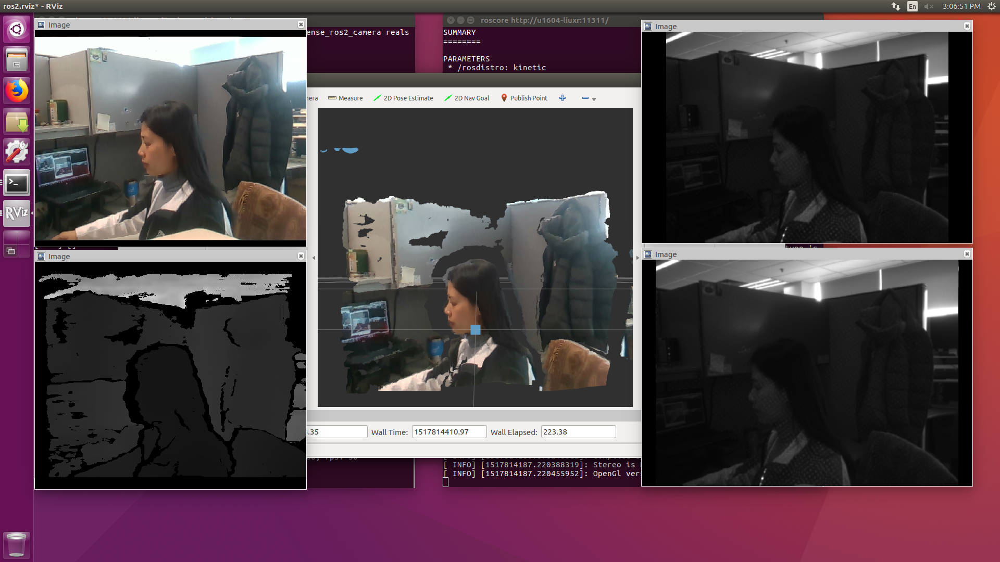

Intel® RealSense™¶
1. Overview¶
These are packages for using Intel® RealSense™ cameras (D400 series) with ROS2.
2. Running the demo¶
Start the camera node
To start the camera node in ROS2, plug in the camera, then type the following command:
source /opt/robot_devkit/robot_devkit_setup.bash
# To launch with "ros2 run"
ros2 run realsense_ros2_camera realsense_ros2_camera
# OR, to invoke the executable directly
realsense_ros2_camera
This will stream all camera sensors and publish on the appropriate ROS2 topics. PointCloud2 is enabled by default.
View camera data
# in Terminal #1 launch realsense_ros2_camera
source /opt/robot_devkit/robot_devkit_setup.bash
realsense_ros2_camera
# in terminal #2 launch rviz2
source /opt/robot_devkit/robot_devkit_setup.bash
rviz2
This will launch RVIZ2 and display the five streams: color, depth, infra1, infra2, pointcloud.
Realsense can also support SLAM and navigation, see here.
3. Key Interfaces¶
4. Known Issues¶
- This ROS2 node does not currently provide any dynamic reconfigure support for camera properties/presets.
- We support Ubuntu Linux 18.04 (Bionic Beaver) on 64-bit, but not support Mac OS X and Windows yet.
5. ToDo¶
- A few features to be ported from the latest realsense_ros_camera v2.0.2
- RGB-D point cloud (depth_registered)
- Preset/Controls